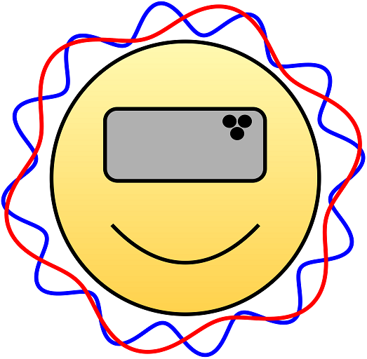

DeepHz: The Mobile Mind Machine
- The relaxed sensation produced from being immersed in an environment of binaural tones and flashing lights is called brainwave entrainment. "DeepHz" uses binaural tones and a unique method of ramping between colors to make brain entrainment easier to achieve. Here is a more detailed discussion about brainwave entrainment with ChatGPT.
- Link to instructions and information about a custom headset.
- Want to customize DeepHz? Check out the computer code that runs DeepHz. If you make simple changes to the file, script-deepHz.js, then you can substitute your own music or flashing patterns to whatever you like!
- Check out my other website dedicated to hiking and traveling in a minivan camper